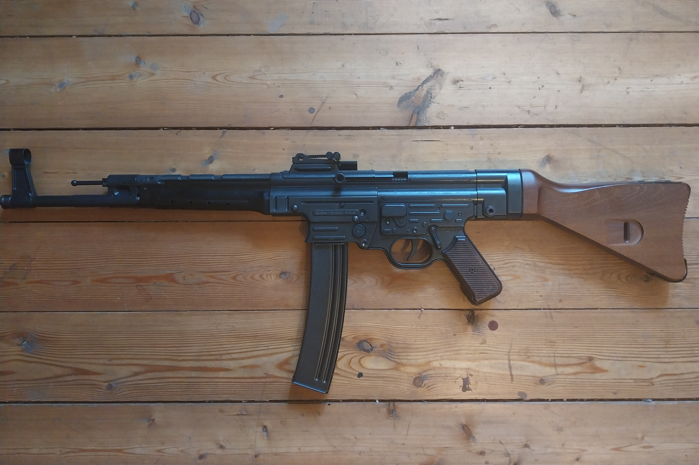

Naš primerek jurišne puške StG 44 je preživela že več vojn, od katerih se je ena končala šele pred nekaj leti! Gotovo je, da je svojo pot začela leta 1944 in takrat je bila dodeljena 17-letnemu Maximilianu Schmidtu, ki se je boril v paravojaški organizaciji rezervistov Volkssturm. Vojak naj bi umrl aprila 1945, tedaj pa so njegovo orožje zasegle sovjetske sile. Puška je bila prodana Siriji v sedemdesetih letih, ko se bližnji vzhod zajeli nemiri. Vemo, da v Jomkipurski vojni ni bila uporabljena, saj je le zbirala prah v vojaškem skladišču v Alepu. Ko se je začela državljanska vojna v Siriji, je mesto Alepo večji del vojne preživelo v rokah upornikov, in takrat je puška končno dobila novo poslanstvo. Prejel jo je Ahmed Hasan abu Khattab, borec v skupini Ahrar al Šam, ki je padel pod puškami Wagner skupine spomladi leta 2017. Kako je puška prišla v Evropo, ni znano.
Glede na vse, kar je prestala, je puška izvrstno ohranjena, brez problemov sprejema nabojnike in strelja. Oznake kažejo, da je bila narejena leta 1944.
| Ime orožja: | Dolžina orožja: | Naboj: | Proizvajalec: | Sturmgewehr 44 | 94 cm | 7.92x33 | Haenel Waffenfabrik |
|---|---|---|---|
© David Stepančič. All Rights Reserved. Spletišče je projekt, namenjen izobraževanju in ni namenjen prodaji kakršnegakoli orožja.